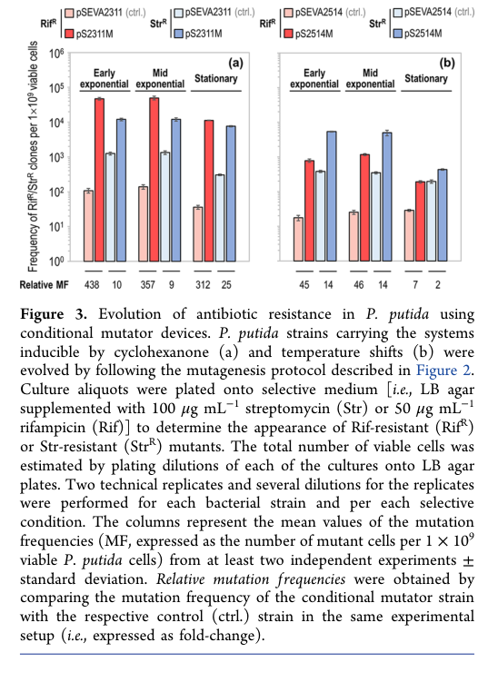

DNA mismatch repair protein MutS, the mismatch-recognition ATPase that initiates post-replicative mismatch repair (MMR). As a homodimer, MutS scans newly replicated double-stranded DNA, recognizes base-base mismatches and small insertion/deletion loops, and bends the DNA at the mismatch. Upon ADP-to-ATP exchange it converts into a ring-like sliding clamp that releases the mismatch and recruits the MutL endonuclease, coordinating strand-specific excision and resynthesis to correct replication errors. MutS therefore maintains replication fidelity and suppresses spontaneous mutation; its loss produces a strong mutator phenotype. In Pseudomonas putida KT2440, MMR comprises MutS and MutL homologs but lacks a MutH homolog, so strand incision is MutH-independent. The protein is cytoplasmic and acts on chromosomal DNA at the replisome/nucleoid.
| GO Term | Evidence | Action | Reason |
|---|---|---|---|
|
GO:0003684
damaged DNA binding
|
IEA
GO_REF:0000104 |
KEEP AS NON CORE |
Summary: MutS binds DNA containing mismatches/distortions; "damaged DNA binding" is a defensible parent-level molecular function for a mismatch-recognition protein.
Reason: Correct in essence but more general than the precise activity. The specific function (mismatched DNA binding, GO:0030983) is separately annotated and is more informative, so this broader term is retained as non-core.
|
|
GO:0003690
double-stranded DNA binding
|
IEA
GO_REF:0000118 |
KEEP AS NON CORE |
Summary: MutS recognizes mismatches within double-stranded DNA, so dsDNA binding is accurate but generic.
Reason: Accurate but a general binding term; the substrate-specific mismatched DNA binding term captures the core molecular function. Retain as supporting, non-core.
|
|
GO:0005524
ATP binding
|
IEA
GO_REF:0000120 |
ACCEPT |
Summary: MutS has a conserved Walker A/B P-loop ATPase domain (MutS_V) and binds/hydrolyzes ATP; nucleotide exchange drives the conformational switch to the sliding-clamp state. ATP binding is well supported by domain architecture and the MutS family mechanism.
Reason: Strongly supported by the conserved C-terminal ABC-ATPase domain and the established MutS catalytic cycle; a genuine molecular function of the protein.
|
|
GO:0005829
cytosol
|
IEA
GO_REF:0000118 |
ACCEPT |
Summary: MutS is a soluble cytoplasmic protein that acts on chromosomal DNA; cytosolic localization is consistent with conserved bacterial MutS biology, though no P. putida-specific localization imaging was found.
Reason: Appropriate cellular component for a cytoplasmic DNA-repair enzyme in a bacterium lacking a nucleus; consistent with the MutS family.
|
|
GO:0006298
mismatch repair
|
IEA
GO_REF:0000120 |
ACCEPT |
Summary: MutS is the initiating mismatch sensor of the MMR pathway. In P. putida KT2440, deletion of mutS produces a strong mutator phenotype (~1000-fold higher rifampicin-resistance frequency) and a mismatch-recognition hierarchy was experimentally established, directly confirming its role in mismatch repair.
Reason: Core biological process for MutS, supported by conserved function and direct organism-specific genetic evidence.
|
|
GO:0030983
mismatched DNA binding
|
IEA
GO_REF:0000120 |
ACCEPT |
Summary: The defining molecular function of MutS is recognition/binding of base-base mismatches and small insertion/deletion loops in DNA, initiating repair.
Reason: Most specific and informative molecular function term for the mismatch-recognition activity that defines MutS; core function.
|
|
GO:0140664
ATP-dependent DNA damage sensor activity
|
IEA
GO_REF:0000002 |
ACCEPT |
Summary: MutS couples mismatch (damage) sensing to ATP binding/hydrolysis, undergoing an ATP-driven conformational change to a sliding clamp upon recognizing a mismatch. This captures the integrated ATP-dependent damage-sensing activity.
Reason: Accurately describes MutS as an ATP-dependent sensor that detects DNA mismatches/distortions and transmits the signal; well supported by the family mechanism. Core function.
|
Q: Does P. putida KT2440 MutS localize to the replisome/nucleoid and interact directly with the beta-clamp (DnaN) for strand discrimination, as suggested for MutH-lacking systems?
Experiment: In vitro reconstitution of P. putida MutS mismatch-binding and ATPase activity to confirm substrate specificity and the ATP-driven sliding-clamp transition.
Experiment: Determine how strand discrimination is achieved in the MutH-independent P. putida MMR system (e.g., role of MutL endonuclease activity and pre-existing strand discontinuities).
This report is retrieval-only and is generated directly from Asta results.
json{"genes": ["HER2", "PTEN"], "drugs": ["neratinib"]} Example invalid answers: 'Found these { "genes"...}', 'The drugs are neratinib...', 'I do not see any genes here.' ["extract_entities", "gencode_gene_node", "query_gwas_by_gene", "variant_annotations", "sei", "expectosc_predictions_agent", "remap_crm_agent"] 2. Variant pathogenicity:search_papers_by_relevance with snippet_search.The research report should be a detailed narrative explaining the function, biological processes, and localization of the gene product. Citations should be given for all claims.
You should prioritize authoritative reviews and primary scientific literature when conducting research. You can supplement
this with annotations you find in gene/protein databases, but these can be outdated or inaccurate.
We are specifically interested in the primary function of the gene - for enzymes, what reaction is catalyzed, and what is the substrate specificity? For transporters, what is the substrate? For structural proteins or adapters, what is the broader structural role? For signaling molecules, what is the role in the pathway.
We are interested in where in or outside the cell the gene product carries out its function.
We are also interested in the signaling or biochemical pathways in which the gene functions. We are less interested in broad pleiotropic effects, except where these elucidate the precise role.
Include evidence where possible. We are interested in both experimental evidence as well as inference from structure, evolution, or bioinformatic analysis. Precise studies should be prioritized over high-throughput, where available.
The target protein is MutS, a canonical DNA mismatch repair (MMR) mismatch-recognition ATPase in Pseudomonas putida strain KT2440 (gene mutS, locus PP_1626, UniProt Q88ME7). P. putida KT2440 is reported to encode mutS and mutL but lacks a bona fide mutH homolog, indicating an “abridged” bacterial MMR architecture relative to E. coli’s MutS/MutL/MutH pathway. (aparicio2020mismatchrepairhierarchy pages 1-2)
MutS is the initiating sensor of post-replicative mismatch repair, detecting replication errors (base–base mismatches and small insertion–deletion loops, IDLs), and then coordinating recruitment/activation of downstream repair factors (notably MutL-family proteins) to remove the error-containing nascent strand segment and restore the correct sequence. (waters2024newdiscoverieson pages 8-9, zarb2024singlemoleculeprobing pages 20-28)
MutS recognizes single-base mismatches and small IDLs, with strong preference for single-base IDLs over larger loops (larger IDLs are inefficiently recognized/processed by MutS alone, implying different handling or reduced repair). (zarb2024singlemoleculeprobing pages 57-61, zarb2024singlemoleculeprobing pages 61-65)
Recent single-molecule kinetic work (largely in E. coli MutS, used here as mechanistic inference for bacterial MutS family members) supports a nucleotide-state model:
Quantitative kinetic parameters from single-molecule measurements illustrate nucleotide control. For example, for a CC mismatch, the conformational-change rate k2 was reported as 0.007 ± 0.001 s⁻¹ with 1 mM ADP versus 0.57 ± 0.01 s⁻¹ with 1 mM ATP, highlighting strong ATP dependence and ADP dampening; clamp-formation rate is reduced by physiologic ADP levels. (zarb2024singlemoleculeprobing pages 52-57, zarb2024singlemoleculeprobing pages 57-61)
A key unresolved/active research area is how mismatch detection by MutS leads to strand incision/excision at sites that may be distant from the mismatch. A 2024 review synthesizes evidence into three non-exclusive model classes:
Crucially, this review contrasts E. coli’s MutH-dependent pathway with MutH-lacking systems where MutL-family proteins provide endonuclease activity to create nicks on the nascent strand, requiring robust long-range communication mechanisms. This distinction is directly relevant to P. putida KT2440, which lacks MutH. (collingwood2024actionatadistanceindna pages 3-4, aparicio2020mismatchrepairhierarchy pages 1-2)
In P. putida KT2440, MMR is described as comprising MutS and MutL homologs without MutH, motivating empirical measurement of mismatch-type sensitivity in this organism. (aparicio2020mismatchrepairhierarchy pages 1-2)
Using ssDNA recombineering of pyrF under wild-type conditions, ΔmutS, and transient MutL inhibition (dominant-negative mutL E36K), a mismatch-recognition hierarchy was established for P. putida:
A:G < C:C < G:A < C:A, A:A, G:G, T:T, T:G, A:C, C:T < G:T, T:C. (aparicio2020mismatchrepairhierarchy pages 1-2)
This is a key, direct P. putida-specific functional annotation point: MutS-dependent MMR does not correct all mismatches equally; rather, mismatch identity strongly affects whether introduced base substitutions are rejected or tolerated. (aparicio2020mismatchrepairhierarchy pages 1-2)
Direct imaging or subcellular localization measurements for MutS in P. putida KT2440 were not found in the retrieved corpus. However, based on conserved bacterial MutS biochemistry, its site of action is intracellular on chromosomal DNA (nucleoid-associated) during/after replication when mismatches arise. (zarb2024singlemoleculeprobing pages 20-28, waters2024newdiscoverieson pages 8-9)
P. putida sources explicitly describe MutS recruiting MutL as an initiating step (canonical MMR). (fernandezcabezon2021spatiotemporalmanipulationof pages 2-3)
Because P. putida lacks MutH, its strand incision is expected to be MutL-mediated (endonuclease-capable MutL systems) or reliant on pre-existing discontinuities, consistent with the broader MutH-lacking MMR paradigm described in 2024 expert synthesis. (collingwood2024actionatadistanceindna pages 3-4, collingwood2024actionatadistanceindna pages 1-3)
A P. putida KT2440 study discussing MMR notes that strand discrimination “could involve the beta clamp of the replication machinery,” citing prior work (in other bacteria) connecting replication clamps to MMR positioning, but this is not direct biochemical evidence in P. putida. (aparicio2020mismatchrepairhierarchy pages 8-9)
The 2024 Biomolecules review emphasizes that “action-at-a-distance” remains incompletely explained and that multiple mechanisms likely coexist, with organism-specific differences between bacterial and eukaryotic systems and between MutH-dependent vs MutH-lacking pathways. (collingwood2024actionatadistanceindna pages 4-6, collingwood2024actionatadistanceindna pages 3-4)
Recent single-molecule work quantifies how ATP promotes mismatch binding and sliding-clamp formation, while physiologic ADP buffers/dampens clamp formation and conformational changes, providing a kinetic basis for how cellular nucleotide pools can tune MMR initiation. (zarb2024singlemoleculeprobing pages 52-57, zarb2024singlemoleculeprobing pages 57-61)
A 2024 review of early DNA damage response steps summarizes the widely accepted MMR recruitment cascade in which MutS-family sensors detect replication errors, then recruit MutL-family proteins whose nuclease activity (in MutH-lacking systems) can be activated in coordination with replication-associated clamps (e.g., PCNA in eukaryotes), followed by excision and resynthesis. (waters2024newdiscoverieson pages 8-9)
A demonstrated real-world implementation for P. putida is spatiotemporal manipulation of MMR to accelerate evolution/phenotype emergence using inducible expression of a dominant-negative mutL E36K allele on broad-host-range plasmids.
Quantitative outcomes (mutation frequency readouts in rpoB and rpsL via antibiotic resistance):
The same work cites prior evidence that a ΔmutS KT2440 derivative has ~1000-fold higher frequency of rifampicin-resistant mutants than wild type, illustrating the strong constitutive mutator phenotype expected when MutS is removed. (fernandezcabezon2021spatiotemporalmanipulationof pages 8-8)
These mutator devices were used to accelerate emergence of selectable phenotypes (e.g., antibiotic resistance) and to revert a synthetic uracil auxotrophy, and were positioned as tools to support adaptive laboratory evolution and metabolic cell factory optimization. (fernandezcabezon2021spatiotemporalmanipulationof pages 1-2)
A P. putida recombineering study explicitly frames permanent ΔmutS or transient MMR suppression (dominant-negative MutL) as a strategy to enable “bias-free” incorporation of base substitutions during ssDNA recombineering, supporting strain engineering methods for precise single-nucleotide changes. (aparicio2020mismatchrepairhierarchy pages 1-2, aparicio2020mismatchrepairhierarchy pages 8-9)
MutS (Q88ME7) functions as a DNA mismatch-recognition ATPase that initiates MMR by detecting mismatches/small IDLs in dsDNA and transitioning (ATP-driven) into a sliding clamp state that recruits MutL-family proteins to trigger downstream incision/excision and repair synthesis. (zarb2024singlemoleculeprobing pages 20-28, zarb2024singlemoleculeprobing pages 57-61)
MutS participates in replication fidelity maintenance through the DNA mismatch repair pathway, thereby suppressing spontaneous mutation accumulation; disabling MMR (ΔmutS or dominant-negative MutL) yields strong mutator phenotypes, directly demonstrated in P. putida KT2440 by large increases in antibiotic-resistant mutants. (fernandezcabezon2021spatiotemporalmanipulationof pages 3-4, fernandezcabezon2021spatiotemporalmanipulationof pages 8-8)
MutS action is best annotated as cytoplasmic / nucleoid-associated (DNA-bound), acting on chromosomal DNA. Direct P. putida-specific localization measurements were not identified in the retrieved sources, so this localization is inferred from conserved MutS family mechanism. (zarb2024singlemoleculeprobing pages 20-28, waters2024newdiscoverieson pages 8-9)
For P. putida, experimental evidence indicates that mismatch identity strongly controls repair sensitivity, yielding a specific mismatch hierarchy that should be considered when interpreting mutation spectra, designing recombineering oligos, or engineering directed evolution schemes. (aparicio2020mismatchrepairhierarchy pages 1-2)
| Topic | Concise finding | Quantitative / specific details | Key citations, DOI/URL, year |
|---|---|---|---|
| Verified target identity | Target matches MutS DNA mismatch repair protein: UniProt Q88ME7, gene mutS, ordered locus PP_1626, organism Pseudomonas putida KT2440; literature on P. putida MMR consistently treats MutS as the mismatch-recognition factor acting with MutL in an abridged, MutH-lacking bacterial MMR system. Conserved family/domain assignment is consistent with a canonical MutS DNA mismatch repair family ATPase/sliding-clamp protein. | P. putida encodes MutS and MutL but lacks a bona fide MutH homolog; therefore pathway inference should follow MutH-independent bacterial MMR, not the full E. coli 3-protein methyl-directed pathway. | (aparicio2020mismatchrepairhierarchy pages 1-2, collingwood2024actionatadistanceindna pages 3-4) Aparicio et al., Environ. Microbiol. DOI: https://doi.org/10.1111/1462-2920.14814 (2020); Collingwood et al., Biomolecules DOI: https://doi.org/10.3390/biom14111442 (2024) |
| Core MutS mechanism | MutS is the primary mismatch sensor. It scans dsDNA in an ADP-bound/open state, binds mismatches or small IDLs, then undergoes ADP→ATP exchange; binding of two ATP molecules converts the dimer to a closed/sliding-clamp state that leaves the mismatch and diffuses on DNA to recruit/load MutL. ATP hydrolysis resets the complex after encountering ssDNA/gaps or breaks. | MutS binds mismatched DNA with ~10–20-fold higher affinity than matched DNA; ATP can enhance mismatch binding up to ~29-fold for some mismatches; ADP reduces clamp-formation kinetics; example for CC mismatch: k2 = 0.007 ± 0.001 s⁻¹ with 1 mM ADP vs 0.57 ± 0.01 s⁻¹ with 1 mM ATP. DNA is kinked by ~60° upon mismatch recognition. | (zarb2024singlemoleculeprobing pages 57-61, zarb2024singlemoleculeprobing pages 20-28, zarb2024singlemoleculeprobing pages 61-65, zarb2024singlemoleculeprobing pages 15-20, zarb2024singlemoleculeprobing pages 52-57) Zarb (2024, single-molecule thesis/manuscript in retrieved corpus); Waters & Spratt, DOI: https://doi.org/10.3390/ijms25031676 (2024) |
| P. putida mismatch-recognition hierarchy | In P. putida, MMR shows a clear mismatch-recognition hierarchy rather than equal correction of all mismatches. This hierarchy was inferred by ssDNA recombineering in WT, ΔmutS, and transient mutL E36K inhibition backgrounds. | Reported hierarchy: A:G < C:C < G:A < C:A, A:A, G:G, T:T, T:G, A:C, C:T < G:T, T:C. This is the key organism-specific specificity result available for KT2440/EM42-related strains. | (aparicio2020mismatchrepairhierarchy pages 1-2) Aparicio et al., DOI: https://doi.org/10.1111/1462-2920.14814 (2020) |
| P. putida mutator phenotypes / MMR perturbation | Conditional inhibition of MMR in P. putida was implemented with plasmid-borne dominant-negative mutL E36K devices; these transiently elevate mutation frequency and accelerate phenotype emergence. A cited KT2440 ΔmutS strain shows a much stronger constitutive mutator phenotype. | KT2440/pS2311M: 438-fold increase in RifR and 10-fold increase in StrR vs control when induction ended in early exponential phase. KT2440/pS2514M: 45-fold RifR and 14-fold StrR increases. A cited prior study found ΔmutS KT2440 ~1000-fold higher RifR frequency vs WT. Mutation frequencies were reported as mutants per 10⁹ viable cells. | (fernandezcabezon2021spatiotemporalmanipulationof pages 3-4, fernandezcabezon2021spatiotemporalmanipulationof pages 8-8, fernandezcabezon2021spatiotemporalmanipulationof pages 4-5, fernandezcabezon2021spatiotemporalmanipulationof pages 1-2, fernandezcabezon2021spatiotemporalmanipulationof pages 6-7) Fernández-Cabezón et al., ACS Synth. Biol. DOI: https://doi.org/10.1021/acssynbio.1c00031 (2021) |
| Action-at-a-distance models | Recent expert synthesis concludes that communication between a mismatch-bound MutS complex and distant incision/excision sites can be explained by three non-exclusive model classes: tracking/sliding, DNA looping, and oligomerization/bridging. In MutH-lacking bacteria, MutL-family endonuclease activity substitutes for MutH-mediated nicking. | Sliding-clamp models: ATP-bound MutS diffuses away from the mismatch and recruits MutL. Looping models: ATP-driven translocation/extrusion brings distant sites together. Oligomerization models: MutS remains mismatch-bound while MutL/other factors bridge distance. Review emphasizes that mechanisms likely differ by organism and may coexist. | (collingwood2024actionatadistanceindna pages 4-6, collingwood2024actionatadistanceindna pages 3-4, collingwood2024actionatadistanceindna pages 1-3, collingwood2024actionatadistanceindna pages 12-14) Collingwood et al., Biomolecules DOI: https://doi.org/10.3390/biom14111442 (2024) |
| Pathway context and localization | Functional localization is intracellular, chromosome-associated (nucleoid/DNA-bound): MutS acts on newly replicated genomic DNA where replication errors arise, then coordinates with MutL and downstream excision/resynthesis factors. For P. putida, localization is inferred from conserved bacterial MutS biochemistry and organism-specific MMR genetics rather than direct localization imaging in the retrieved sources. | In canonical bacterial descriptions, downstream factors include MutL, helicase/excision factors such as UvrD and exonucleases, followed by DNA polymerase and ligase. In MutH-lacking systems, strand discrimination relies on MutL endonuclease/nicks or pre-existing discontinuities rather than MutH cleavage at hemimethylated GATC sites. | (aparicio2020mismatchrepairhierarchy pages 1-2, aparicio2020mismatchrepairhierarchy pages 12-13, collingwood2024actionatadistanceindna pages 3-4, collingwood2024actionatadistanceindna pages 1-3, waters2024newdiscoverieson pages 8-9) Aparicio et al., DOI: https://doi.org/10.1111/1462-2920.14814 (2020); Collingwood et al., DOI: https://doi.org/10.3390/biom14111442 (2024); Waters & Spratt, DOI: https://doi.org/10.3390/ijms25031676 (2024) |
Table: This table condenses the verified identity, conserved mechanism, organism-specific mismatch preferences, quantitative mutator phenotypes, and current mechanistic models relevant to Pseudomonas putida KT2440 MutS (Q88ME7/PP_1626). It separates direct P. putida evidence from broader bacterial MutS mechanism needed for functional annotation.
References
(aparicio2020mismatchrepairhierarchy pages 1-2): Tomas Aparicio, Akos Nyerges, István Nagy, Csaba Pal, Esteban Martínez‐García, and Víctor de Lorenzo. Mismatch repair hierarchy of pseudomonas putida revealed by mutagenic ssdna recombineering of the pyrf gene. Environmental Microbiology, 22:45-58, Nov 2020. URL: https://doi.org/10.1111/1462-2920.14814, doi:10.1111/1462-2920.14814. This article has 23 citations and is from a domain leading peer-reviewed journal.
(waters2024newdiscoverieson pages 8-9): Kelly L. Waters and Donald E. Spratt. New discoveries on protein recruitment and regulation during the early stages of the dna damage response pathways. International Journal of Molecular Sciences, 25:1676, Jan 2024. URL: https://doi.org/10.3390/ijms25031676, doi:10.3390/ijms25031676. This article has 15 citations.
(zarb2024singlemoleculeprobing pages 20-28): J Zarb. Single molecule probing of mismatch type and sequence dependence of dna mismatch repair by muts. Unknown journal, 2024.
(zarb2024singlemoleculeprobing pages 57-61): J Zarb. Single molecule probing of mismatch type and sequence dependence of dna mismatch repair by muts. Unknown journal, 2024.
(zarb2024singlemoleculeprobing pages 61-65): J Zarb. Single molecule probing of mismatch type and sequence dependence of dna mismatch repair by muts. Unknown journal, 2024.
(zarb2024singlemoleculeprobing pages 15-20): J Zarb. Single molecule probing of mismatch type and sequence dependence of dna mismatch repair by muts. Unknown journal, 2024.
(zarb2024singlemoleculeprobing pages 52-57): J Zarb. Single molecule probing of mismatch type and sequence dependence of dna mismatch repair by muts. Unknown journal, 2024.
(collingwood2024actionatadistanceindna pages 1-3): Bryce W. Collingwood, Scott J. Witte, and Carol M. Manhart. Action-at-a-distance in dna mismatch repair: mechanistic insights and models for how dna and repair proteins facilitate long-range communication. Biomolecules, 14:1442, Nov 2024. URL: https://doi.org/10.3390/biom14111442, doi:10.3390/biom14111442. This article has 1 citations.
(collingwood2024actionatadistanceindna pages 4-6): Bryce W. Collingwood, Scott J. Witte, and Carol M. Manhart. Action-at-a-distance in dna mismatch repair: mechanistic insights and models for how dna and repair proteins facilitate long-range communication. Biomolecules, 14:1442, Nov 2024. URL: https://doi.org/10.3390/biom14111442, doi:10.3390/biom14111442. This article has 1 citations.
(collingwood2024actionatadistanceindna pages 3-4): Bryce W. Collingwood, Scott J. Witte, and Carol M. Manhart. Action-at-a-distance in dna mismatch repair: mechanistic insights and models for how dna and repair proteins facilitate long-range communication. Biomolecules, 14:1442, Nov 2024. URL: https://doi.org/10.3390/biom14111442, doi:10.3390/biom14111442. This article has 1 citations.
(fernandezcabezon2021spatiotemporalmanipulationof pages 2-3): Lorena Fernández-Cabezón, Antonin Cros, and Pablo I. Nikel. Spatiotemporal manipulation of the mismatch repair system of pseudomonas putida accelerates phenotype emergence. Apr 2021. URL: https://doi.org/10.1021/acssynbio.1c00031, doi:10.1021/acssynbio.1c00031. This article has 28 citations and is from a domain leading peer-reviewed journal.
(aparicio2020mismatchrepairhierarchy pages 8-9): Tomas Aparicio, Akos Nyerges, István Nagy, Csaba Pal, Esteban Martínez‐García, and Víctor de Lorenzo. Mismatch repair hierarchy of pseudomonas putida revealed by mutagenic ssdna recombineering of the pyrf gene. Environmental Microbiology, 22:45-58, Nov 2020. URL: https://doi.org/10.1111/1462-2920.14814, doi:10.1111/1462-2920.14814. This article has 23 citations and is from a domain leading peer-reviewed journal.
(fernandezcabezon2021spatiotemporalmanipulationof pages 3-4): Lorena Fernández-Cabezón, Antonin Cros, and Pablo I. Nikel. Spatiotemporal manipulation of the mismatch repair system of pseudomonas putida accelerates phenotype emergence. Apr 2021. URL: https://doi.org/10.1021/acssynbio.1c00031, doi:10.1021/acssynbio.1c00031. This article has 28 citations and is from a domain leading peer-reviewed journal.
(fernandezcabezon2021spatiotemporalmanipulationof media 45d6effd): Lorena Fernández-Cabezón, Antonin Cros, and Pablo I. Nikel. Spatiotemporal manipulation of the mismatch repair system of pseudomonas putida accelerates phenotype emergence. Apr 2021. URL: https://doi.org/10.1021/acssynbio.1c00031, doi:10.1021/acssynbio.1c00031. This article has 28 citations and is from a domain leading peer-reviewed journal.
(fernandezcabezon2021spatiotemporalmanipulationof pages 8-8): Lorena Fernández-Cabezón, Antonin Cros, and Pablo I. Nikel. Spatiotemporal manipulation of the mismatch repair system of pseudomonas putida accelerates phenotype emergence. Apr 2021. URL: https://doi.org/10.1021/acssynbio.1c00031, doi:10.1021/acssynbio.1c00031. This article has 28 citations and is from a domain leading peer-reviewed journal.
(fernandezcabezon2021spatiotemporalmanipulationof pages 1-2): Lorena Fernández-Cabezón, Antonin Cros, and Pablo I. Nikel. Spatiotemporal manipulation of the mismatch repair system of pseudomonas putida accelerates phenotype emergence. Apr 2021. URL: https://doi.org/10.1021/acssynbio.1c00031, doi:10.1021/acssynbio.1c00031. This article has 28 citations and is from a domain leading peer-reviewed journal.
(fernandezcabezon2021spatiotemporalmanipulationof pages 4-5): Lorena Fernández-Cabezón, Antonin Cros, and Pablo I. Nikel. Spatiotemporal manipulation of the mismatch repair system of pseudomonas putida accelerates phenotype emergence. Apr 2021. URL: https://doi.org/10.1021/acssynbio.1c00031, doi:10.1021/acssynbio.1c00031. This article has 28 citations and is from a domain leading peer-reviewed journal.
(fernandezcabezon2021spatiotemporalmanipulationof pages 6-7): Lorena Fernández-Cabezón, Antonin Cros, and Pablo I. Nikel. Spatiotemporal manipulation of the mismatch repair system of pseudomonas putida accelerates phenotype emergence. Apr 2021. URL: https://doi.org/10.1021/acssynbio.1c00031, doi:10.1021/acssynbio.1c00031. This article has 28 citations and is from a domain leading peer-reviewed journal.
(collingwood2024actionatadistanceindna pages 12-14): Bryce W. Collingwood, Scott J. Witte, and Carol M. Manhart. Action-at-a-distance in dna mismatch repair: mechanistic insights and models for how dna and repair proteins facilitate long-range communication. Biomolecules, 14:1442, Nov 2024. URL: https://doi.org/10.3390/biom14111442, doi:10.3390/biom14111442. This article has 1 citations.
(aparicio2020mismatchrepairhierarchy pages 12-13): Tomas Aparicio, Akos Nyerges, István Nagy, Csaba Pal, Esteban Martínez‐García, and Víctor de Lorenzo. Mismatch repair hierarchy of pseudomonas putida revealed by mutagenic ssdna recombineering of the pyrf gene. Environmental Microbiology, 22:45-58, Nov 2020. URL: https://doi.org/10.1111/1462-2920.14814, doi:10.1111/1462-2920.14814. This article has 23 citations and is from a domain leading peer-reviewed journal.
(aparicio2020mismatchrepairhierarchy pages 13-14): Tomas Aparicio, Akos Nyerges, István Nagy, Csaba Pal, Esteban Martínez‐García, and Víctor de Lorenzo. Mismatch repair hierarchy of pseudomonas putida revealed by mutagenic ssdna recombineering of the pyrf gene. Environmental Microbiology, 22:45-58, Nov 2020. URL: https://doi.org/10.1111/1462-2920.14814, doi:10.1111/1462-2920.14814. This article has 23 citations and is from a domain leading peer-reviewed journal.

id: Q88ME7
gene_symbol: mutS
product_type: PROTEIN
status: DRAFT
taxon:
id: NCBITaxon:160488
label: Pseudomonas putida (strain ATCC 47054 / DSM 6125 / CFBP 8728 / NCIMB 11950 / KT2440)
description: DNA mismatch repair protein MutS, the mismatch-recognition ATPase that initiates post-replicative mismatch repair
(MMR). As a homodimer, MutS scans newly replicated double-stranded DNA, recognizes base-base mismatches and small insertion/deletion
loops, and bends the DNA at the mismatch. Upon ADP-to-ATP exchange it converts into a ring-like sliding clamp that releases
the mismatch and recruits the MutL endonuclease, coordinating strand-specific excision and resynthesis to correct replication
errors. MutS therefore maintains replication fidelity and suppresses spontaneous mutation; its loss produces a strong mutator
phenotype. In Pseudomonas putida KT2440, MMR comprises MutS and MutL homologs but lacks a MutH homolog, so strand incision
is MutH-independent. The protein is cytoplasmic and acts on chromosomal DNA at the replisome/nucleoid.
existing_annotations:
- term:
id: GO:0003684
label: damaged DNA binding
evidence_type: IEA
original_reference_id: GO_REF:0000104
qualifier: enables
review:
summary: MutS binds DNA containing mismatches/distortions; "damaged DNA binding" is a defensible parent-level molecular
function for a mismatch-recognition protein.
action: KEEP_AS_NON_CORE
reason: Correct in essence but more general than the precise activity. The specific function (mismatched DNA binding,
GO:0030983) is separately annotated and is more informative, so this broader term is retained as non-core.
- term:
id: GO:0003690
label: double-stranded DNA binding
evidence_type: IEA
original_reference_id: GO_REF:0000118
qualifier: enables
review:
summary: MutS recognizes mismatches within double-stranded DNA, so dsDNA binding is accurate but generic.
action: KEEP_AS_NON_CORE
reason: Accurate but a general binding term; the substrate-specific mismatched DNA binding term captures the core molecular
function. Retain as supporting, non-core.
- term:
id: GO:0005524
label: ATP binding
evidence_type: IEA
original_reference_id: GO_REF:0000120
qualifier: enables
review:
summary: MutS has a conserved Walker A/B P-loop ATPase domain (MutS_V) and binds/hydrolyzes ATP; nucleotide exchange drives
the conformational switch to the sliding-clamp state. ATP binding is well supported by domain architecture and the MutS
family mechanism.
action: ACCEPT
reason: Strongly supported by the conserved C-terminal ABC-ATPase domain and the established MutS catalytic cycle; a genuine
molecular function of the protein.
- term:
id: GO:0005829
label: cytosol
evidence_type: IEA
original_reference_id: GO_REF:0000118
qualifier: located_in
review:
summary: MutS is a soluble cytoplasmic protein that acts on chromosomal DNA; cytosolic localization is consistent with
conserved bacterial MutS biology, though no P. putida-specific localization imaging was found.
action: ACCEPT
reason: Appropriate cellular component for a cytoplasmic DNA-repair enzyme in a bacterium lacking a nucleus; consistent
with the MutS family.
- term:
id: GO:0006298
label: mismatch repair
evidence_type: IEA
original_reference_id: GO_REF:0000120
qualifier: involved_in
review:
summary: MutS is the initiating mismatch sensor of the MMR pathway. In P. putida KT2440, deletion of mutS produces a strong
mutator phenotype (~1000-fold higher rifampicin-resistance frequency) and a mismatch-recognition hierarchy was experimentally
established, directly confirming its role in mismatch repair.
action: ACCEPT
reason: Core biological process for MutS, supported by conserved function and direct organism-specific genetic evidence.
- term:
id: GO:0030983
label: mismatched DNA binding
evidence_type: IEA
original_reference_id: GO_REF:0000120
qualifier: enables
review:
summary: The defining molecular function of MutS is recognition/binding of base-base mismatches and small insertion/deletion
loops in DNA, initiating repair.
action: ACCEPT
reason: Most specific and informative molecular function term for the mismatch-recognition activity that defines MutS;
core function.
- term:
id: GO:0140664
label: ATP-dependent DNA damage sensor activity
evidence_type: IEA
original_reference_id: GO_REF:0000002
qualifier: enables
review:
summary: MutS couples mismatch (damage) sensing to ATP binding/hydrolysis, undergoing an ATP-driven conformational change
to a sliding clamp upon recognizing a mismatch. This captures the integrated ATP-dependent damage-sensing activity.
action: ACCEPT
reason: Accurately describes MutS as an ATP-dependent sensor that detects DNA mismatches/distortions and transmits the
signal; well supported by the family mechanism. Core function.
core_functions:
- description: ATP-dependent recognition of base-base mismatches and small insertion/deletion loops in newly replicated double-stranded
DNA, initiating mismatch repair
supported_by:
- reference_id: GO_REF:0000120
molecular_function:
id: GO:0030983
label: mismatched DNA binding
directly_involved_in:
- id: GO:0006298
label: mismatch repair
- description: ATP binding and hydrolysis driving the conformational switch from a DNA-scanning state to a sliding-clamp state
that recruits MutL and signals downstream strand excision/repair
supported_by:
- reference_id: GO_REF:0000002
molecular_function:
id: GO:0140664
label: ATP-dependent DNA damage sensor activity
directly_involved_in:
- id: GO:0006298
label: mismatch repair
references:
- id: GO_REF:0000002
title: Gene Ontology annotation through association of InterPro records with GO terms
findings: []
- id: GO_REF:0000104
title: Electronic Gene Ontology annotations created by transferring manual GO annotations between related proteins based
on shared sequence features
findings: []
- id: GO_REF:0000118
title: TreeGrafter-generated GO annotations
findings: []
- id: GO_REF:0000120
title: Combined Automated Annotation using Multiple IEA Methods
findings: []
- id: PMID:31599106
title: Mismatch repair hierarchy of Pseudomonas putida revealed by mutagenic ssDNA recombineering of the pyrF gene
findings: []
reference_review:
relevance: HIGH
correctness: VERIFIED
review_notes: 'PubMed-verified (Aparicio et al. 2020, Environ Microbiol). KT2440 MMR genetics: MutS/MutL define the mismatch
repair hierarchy controlling spontaneous mutation and recombineering efficiency.'
- id: file:PSEPK/mutS/mutS-uniprot.txt
title: UniProtKB entry for mutS
findings:
- statement: UniProt identity and protein-name metadata used for first-pass pathway curation.
- id: file:PSEPK/mutS/mutS-goa.tsv
title: QuickGO GOA annotations for mutS
findings:
- statement: GOA table containing the annotations reviewed in this file.
- id: file:PSEPK/mutS/mutS-deep-research-asta.md
title: Asta retrieval report for mutS
findings:
- statement: Asta retrieval used as fast gene-level literature context; no unsupported hypotheses were imported.
suggested_questions:
- question: Does P. putida KT2440 MutS localize to the replisome/nucleoid and interact directly with the beta-clamp (DnaN)
for strand discrimination, as suggested for MutH-lacking systems?
suggested_experiments:
- description: In vitro reconstitution of P. putida MutS mismatch-binding and ATPase activity to confirm substrate specificity
and the ATP-driven sliding-clamp transition.
- description: Determine how strand discrimination is achieved in the MutH-independent P. putida MMR system (e.g., role of
MutL endonuclease activity and pre-existing strand discontinuities).
{kind=link}